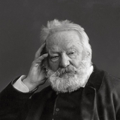
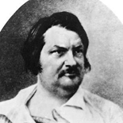
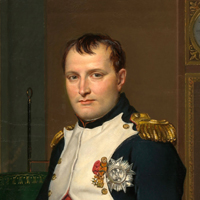
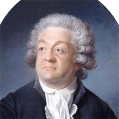
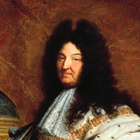

« Eh bien, songez-y, qu'est-ce que la peine de mort ? La peine de mort est le signe spécial et éternel de la barbarie. Partout où la peine de mort est prodiguée, la barbarie domine ; partout où la peine de mort est rare, la civilisation règne.
Messieurs, ce sont là des faits incontestables. L'adoucissement de la pénalité est un grand et sérieux progrès. Le dix-huitième siècle, c'est là une partie de sa gloire, a aboli la torture ; le dix-neuvième siècle abolira la peine de mort !
Vous ne l'abolirez pas peut-être aujourd'hui ; mais, n'en doutez pas, demain, vous l'abolirez, ou vos successeurs l'aboliront !
»

Victor Hugo ( 1802 - 1885 )
Député de Paris, Victor Hugo prononce, à l'Assemblée Constituante, ce plaidoyer contre la peine de mort, le 15 septembre 1848.

Balzac ( 1799 - 1850 )
Dans Le Père Goriot, Vautrin est un forçat évadé de prison. Suite à une dénonciation, il est arrêté à nouveau et il se demande qui l’a trahi dans une langue inspirée de l’argot et du langage des bagnards.
« — Qui m'a trahi ? C'est toi, vieille cagnotte, tu m'as donné un faux coup de sang, curieuse ! En disant deux mots, je pourrais te faire scier le cou dans huit jours. Je te pardonne, je suis chrétien. D'ailleurs ce n'est pas toi qui m'as vendu.
Mais qui ? Je sais qui m'a vendu maintenant ! Ce ne peut être que ce gredin de Fil-de-Soie. Pas vrai, père l'empoigneur ? Ça s'accorde trop bien avec le séjour de nos billets de banque là-haut. Plus rien, mes petits mouchards. Quant à Fil-de-Soie, il sera terré sous quinze jours, lors même que vous le feriez garder par toute votre gendarmerie. Que lui avez-vous donné, à cette Michonnette ? Quelques milliers d'écus ? Ha ! Je valais mieux que ça !
Ninon cariée, Pompadour en loques, Vénus du Père-Lachaise! Si tu m'avais prévenu, tu aurais eu six mille francs. Ha ! tu ne t'en doutais pas ! vieille vendeuse de chair, sans quoi j'aurais eu la préférence !
»

Napoléon ( 1769 - 1821 )
Le 2 décembre 1805, après la victoire d'Austerlitz, Napoléon fait lire à son armée cette proclamation :
« Soldats ! Je suis content de vous. Vous avez à la journée d'Austerlitz, justifié tout ce que j'attendais de votre intrépidité ; vous avez décoré vos aigles d'une immortelle gloire. Une armée de cent mille hommes, commandée par les empereurs de Russie et d'Autriche, a été, en moins de quatre heures, ou coupée ou dispersée. Ce qui a échappé à votre fer s'est noyé dans les lacs. Quarante drapeaux, les étendards de la garde impériale de Russie, cent vingt pièces de canon, vingt généraux, plus de trente mille prisonniers, sont le résultat de cette journée à jamais célèbre.
Soldats, lorsque tout ce qui est nécessaire pour assurer le bonheur et la prospérité de notre patrie sera accompli, je vous ramènerai en France ; là vous serez l'objet de mes plus tendres sollicitudes. Mon peuple vous reverra avec joie, et il vous suffira de dire ' J'étais à la bataille d'Austerlitz ', pour que l'on réponde, ' Voilà un brave ! '
»

Mirabeau ( 1749 - 1791 )
Le 21 juin 1789, Mirabeau s’oppose au marquis de Deux-Brézé qui rappelle un ordre du roi enjoignant aux députés de quitter la salle du jeu de paume où ils s’étaient réunis.
«
Dreux-Brézé :
– ' Messieurs, vous connaissez les ordres du roi ! '
Mirabeau :
– ' Oui, Monsieur, nous avons entendu les intentions qu'on a suggérées au Roi, et vous qui n'avez ici ni place, ni voix, ni droit de parler, vous n'êtes pas fait pour nous rappeler son discours ; cependant, pour éviter toute équivoque et tout délai, je vous déclare que si on vous a chargé de nous faire sortir d'ici, vous devez demander des ordres pour employer la force, car nous ne quitterons nos places que par la puissance de la baïonnette.'
»
Voltaire ( 1694 - 1778 )
Voici un extrait d’une lettre que Voltaire écrivit à Mme Denis le 18 décembre 1752 alors qu’il était l’invité du roi Frédéric II de Prusse.
« Je vais me faire, pour mon instruction, un petit dictionnaire à l'usage des rois.
Mon ami signifie mon esclave.
Mon cher ami veut dire vous m'êtes plus qu'indifférent.
Entendez par je vous rendrai heureux, je vous souffrirai tant que j'aurai besoin de vous.
Soupez avec moi ce soir, signifie je me moquerai de vous ce soir.
Le dictionnaire peut être long ; et c'est un article à mettre dans l'Encyclopédie.
»
Marivaux ( 1688 - 1763 )
Dans cet extrait de La Vie de Marianne, roman qui décrit l’ascension du personnage éponyme, la narratrice compare la science des philosophes à celle des coquettes, qu’elle connaît mieux.
« Vraiment, quand j'ai connu le monde, j'y faisais bien d'autres façons : les hommes parlent de science et de philosophie; voilà quelque chose de beau en comparaison de la science de bien placer un ruban, ou de décider de quelle couleur on le mettra !
Si on savait ce qui se passe dans la tête d'une coquette en pareil cas, combien son âme est déliée et pénétrante ; si on savait ce que je dis là, cela ferait peur, cela humilierait les plus forts esprits, et Aristote ne paraîtrait plus qu'un petit garçon. C'est moi qui le dis, qui le sais à merveille ; et qu'en fait de parure, quand on a trouvé ce qui est bien, ce n'est pas grand'chose, et qu'il faut trouver le mieux pour aller de là au mieux du mieux ; et que, pour attraper ce dernier mieux, il faut lire dans le cœur des hommes, et savoir préférer ce qui le gagne le plus à ce qui ne fait que le gagner beaucoup : et cela est immense !
»
Diderot ( 1713 - 1784 )
Dans cet extrait du Neveu de Rameau, Diderot reproduit la conversation brillante des salons.
« On parle d'un mariage fort saugrenu. Celui de Mademoiselle, comment l'appelez-vous ? une petite créature qu'il entretenoit, à qui il a fait deux ou trois enfants, qui avoit été entretenue par tant d'autres.
– Allons, Rameau ; cela ne se peut, vous radotez.
– Je ne radote point. On dit même que la chose est faite. Le bruit court que De Voltaire est mort. Tant mieux.
– Et pourquoi tant mieux ?
– C'est qu'il va nous donner quelque bonne folie. C'est son usage que de mourir une quinzaine auparavant. Que vous dirai-je encore ? Je disois quelques polissonneries, que je rapportois des maisons où j'avois été ; car nous sommes tous grands colporteurs. Je faisois le fou. On m'écoutoit. On rioit. On s'écrioit, il est toujours charmant.
»
Mme Du Deffand ( 1697 - 1780 )
Mme du Deffand décrit dans une lettre à Horace Walpole la compagnie qu’elle reçoit dans son salon (celui du lundi était particulièrement célèbre et très prisé par les encyclopédistes et les gens du monde)
« J'admirais hier au soir la nombreuse compagnie qui était chez moi ; hommes et femmes me paraissaient des machines à ressort, qui allaient, venaient, parlaient, riaient, sans penser, sans réfléchir, sans sentir ; chacun jouait son rôle par habitude : madame la duchesse d'Aiguillon crevait de rire, madame de Forcalquier dédaignait tout, madame de la Vallière jabotait sur tout.
Les hommes ne jouaient pas de meilleurs rôles et moi j'étais abîmée dans les réflexions les plus noires ; je pensais que j'avais passé ma vie dans des illusions; que je m'étais creusé moi-même tous les abîmes dans lesquels j'étais tombée ; que tous mes jugements avaient été faux et téméraires, et toujours trop précipités, et qu'enfin je n'avais parfaitement bien connu personne : que je n'en avais pas été connue non plus, et que peut-être je ne me connaissais pas moi-même.
»

Racine ( 1639 - 1699 )
Dans ces quelques vers tirés de Bérénice (Acte IV, Scène V), le personnage éponyme fait ses adieux à Titus.
« Je n'écoute plus rien, et pour jamais adieu.
Pour jamais ! Ah ! Seigneur ! songez-vous en vous-même
Combien ce mot cruel est affreux quand on aime ?
Dans un mois, dans un an, comment souffrirons-nous,
Seigneur, que tant de mers me séparent de vous ?
Que le jour recommence et que le jour finisse,
Sans que jamais Titus puisse voir Bérénice,
Sans que de tout le jour je puisse voir Titus ?
»

Louis XIV ( 1638 - 1715 )
Voici un billet du roi adressé à Colbert le 23 avril 1671 dans lequel il montre toute l’autorité dont il est capable.
« C'est la mémoire des services que vous m'avez rendus et mon amitié qui me donnent ce sentiment ; profitez-en et ne hasardez plus de me fâcher encore, car après que j'aurai entendu vos raisons et celles de vos confrères, et que j'aurai prononcé sur toutes vos prétentions, Je ne veux plus jamais en entendre parler.
Voyez si la Marine ne vous convient pas, si vous ne l'avez pas à votre mode, si vous aimeriez mieux autre chose ; parlez librement, mais après la décision que je vous donnerai, je ne veux pas une seule réplique.
»
Molière ( 1622 - 1673 )
Dans cette scène tirée des Précieuses ridicules, Molière se moque des habitudes langagières des Précieuses de son temps.
« Magdelon
Viste, voiturez-vous icy les commoditez de la conversation.
Mascarille
Mais au moins, y-a-t-il seureté icy pour moy ?
Cathos
Que craignez-vous ?
Mascarille
Quelque vol de mon cœur, quelque assassinat de ma franchise. Je vois icy des yeux qui ont la mine d'estre de fort mauvais garçons, de faire insulte aux libertez, & de traiter vne ame de Turc à More. Comment diable, d'abord qu'on les approche, ils se mettent sur leur garde meurtrière ? Ah ! Par ma foy je m'en défie, & je m'en vais gagner au pied, ou je veux caution bourgeoise qu'ils ne me feront point de mal.
Magdelon
Ma chère, c'est la caractère enjoüé.
Cathos
Je vois bien que c'est vn Amilcar.
Magdelon
Ne craignez rien, nos yeux n'ont point de mauvais desseins, & vostre cœur peut dormir en assurance sur leur prud'homie.
Cathos
Mais de grâce, Monsieur, ne soyez pas inexorable à ce fauteuil qui vous tend les bras il y a vn quart d'heure, contentez vn peu l'envie qu'il a de vous embrasser. [ … ]
»
Madeleine de Scudery ( 1607 – 1701 )
Dans Clélie, Madeleine de Scudery imagine la « Carte du Tendre », reconstitution topographique des sentiments amoureux selon les Précieuses de l’époque.
« […] Mais Madame, comme il n'y a point de chemins où l'on ne ſe puiſſe eſgarer, Clelie a fait, comme vous le pouuez voir, que ſi ceux qui ſont à Nouuelle Amitié, prenoient vn peu plus à droit, ou vn peu plus à gauche, ils s'eſgareroient auſſi : car ſi au partir de Grand Eſprit, on alloit à Negligence, que vous voyez tout contre ſur cette Carte ; qu'en ſuite continuant cét eſgarement, on allaſt à Ineſgalité de là à Tiedeur ; à Legereté ; & à Oubly ; au lieu de ſe trouuer à Tendre, ſur Eſtime, on ſe trouueroit au Lac d'Indifference que vous voyez marqué ſur cette Carte ; & qui par ſes eaux tranquiles, repreſente ſans doute fort iuſte, la choſe dont il porte le nom en cét endroit. »
Henri IV ( 1553 – 1610 )
Dans cet extrait tiré de F. Louis, Vie militaire et privé de Henri IV (1803), Henri IV s’adresse au parlement le 7 février 1599, pour leur demander d’enregistrer l’Edit de Nantes.
« La nécessité m'a faicte faire cet esdict (~ ces édits): par (~ pour) la même nécessité que j'ai faict celuy-cy. J'ay autrefois fait le soldat: on en a parlé; je n'en ay pas fait le semblant (~ et n'en ai pas fait semblant). Je suis roy maintenant et parle en roy Je veux estre obéi. A la vérité, la justice (~ les gens de justice) est (~ sont) mon bras droict ; mais si la gangrène est (~ se met) au bras droict, le gauche le doict couper (~ il faut que le gauche le coupe). Quand mes régiments ne me servent plus de rien (~ pas), je les casse. »
Jacques Cartier ( 1491 - 1557 )
Dans cet extrait tiré des récits que Jacques Cartier fit de ses voyages au Canada (cf. M. Huchon, le français au temps de Jacques Cartier, 2009), le narrateur décrit un peuple qu’il a rencontré sur place, et notamment une pratique qui lui est inconnue.
« […] Ilz ont auſsi vne herbe de quoy ilz font grand amaſtz l'eſté durand (durant l'été) pour l'yuer. Laquelle ilz eſtiment fort, & en vſent les hommes ſeulement en (en la) facon que (qui) enſuit. Ilz la font ſeicher au ſoleil, & la portẽt à leur col envne petite peau de beſte en lieu de ſac, auec vng cornet de pierre, ou de boys : puis à toute heure font pouldre de ladicte herbe & la mettẽt en l'ung des boutz dudict cornet. puis mettent vng charbon de feu deſſus, & ſoufflent par l'autrebout, tant qu'ilz ſ'emplẽt (s'emplissent) le corps de fumée, tellement qu'elle leur ſort par la bouche, & par les nazilles, cõe par vng tuyau de cheminée : & diſent (~ils disent) que cela les tient ſains & chauldement, & ne vont iamais sans auoir cesdictes (sans lesdites) choſes. Nous auons eſprouué (~expérimenté) ladicte fumée, après laquelle auoir mis dedãs noſtre bouche, ſemble y auoir mis de la pouldre de poyure tãt eſt chaulde. (Huchon, p. 141)
»
« […] Ils ont aussi une herbe qu'ils amassent en grande quantité durant l'été pour l'hiver, qu'ils estiment fort, et que seuls les hommes utilisent de la façon qui s'ensuit. Ils la font sécher au soleil, et la portent à leur cou dans une petite peau de bête en lieu de sac, avec un cornet de pierre ou de bois. Puis à toute heure, ils réduisent en poudre ladite herbe et la mettent en l'un des bouts dudit cornet. Puis, ils mettent un charbon de feu dessus, et soufflent par l'autre bout, tant qu'ils s'emplissent le corps de fumée ; tellement qu'elle leur sort par la bouche et par les narines comme par un tuyau de cheminée ; et ils disent que cela les tient sains et au chaud, et ils ne vont jamais sans avoir ces dites choses. Nous avons expérimenté ladite fumée ; après laquelle avoir mis notre bouche dedans, il semble y avoir mis de la poudre de poivre tant elle est chaude. »

François Rabelais ( 1483 - 1553 )
Dans cet extrait de Gargantua, Rabelais décrit Jean de Entommeures, un moine qui se bat contre les ennemis venus piller la vigne de son abbaye.
« […] En l'abbaye estoit pour lors un moyne claustrier, nommé Frère Jean de Entommeures, jeune, guallant, frisque, de hayt, bien à bien à dextre, hardy, advantureux, délibéré, hault, maigre, bien fendu de gueule, bien advantaigé en nez, beau despescheur d'heures, beau desbrideur de messes, beau descroteur de vigiles, pour tout dire sommairement vray moyne si oncques en feut depuys que le monde moynant moyna de moynerie ; au reste clerc jusques ès dents en matiere de breviaire. »
« Dans l'abbaye, il y avait pour lors un moine cloîtré, nommé Frère Jean de Entommeures, jeune, vaillant, alerte, ayant bon cœur, adroit, hardi, aventureux, décidé, fier, maigre, bien fendu de gueule, bien avantagé en nez, capable d'expédier rapidement une tâche, capable de célébrer rapidement les messes, capable de réciter des vigiles, pour tout dire, sommairement, un vrai moine s'il en eut une fois depuis que le monde moinant moina de moinerie au reste, clerc jusqu'aux dents en matière de bréviaire. »
Jeanne d'Arc ( 1412 - 1431 )
Ce texte est une adaptation de ce qui a été rapporté par ceux qui ont interrogé Jeanne d’arc lors de son procès (cf. Tisset, Pierre, Procès de condamnation de Jeanne d’arc, 1960). Après s’être blessée en sautant d’une tour pour s’échapper de prison, Jeanne explique son geste :
« Je le faisoye non pas en esperance de moy deesperer, mais en esperance de sauver mon corps et de aller secourir plusieurs bonnes gens qui estoient en necessité. Et après le sault, [m'] en [suis] confessee et en ai requis mercy a nostre Sire, et en [ai] pardon de nostre Sire. Et croi[s] que ce n'estoit pas bien fait de faire ce sault ; mais fust mal fait. »
« Je le faisais non dans l'espoir de m'enlever la vie, mais dans l'espoir de sauver mon corps et d'aller secourir beaucoup de bonnes gens qui étaient dans le besoin. Et après ce saut, je m'en suis confessée et j'ai demandé grâce à notre Seigneur, et j'ai eu le pardon de notre Seigneur. Et je crois que de faire ce saut n'était pas bien, mais que cela était mal. »
Saint-Louis ( 1214 - 1270 )
Dans ses mémoires, Joinville raconte que Saint-Louis, sur son lit de mort, prodigue ses derniers conseils à son fils et successeur.
« Biau filz, je te pri que tu te faces amer au peuple de ton royaume; car vraiement je aimeraie miex que un Escot venist d'Escosse et gouvernast le peuple du royaume bien et loialment, que tu le gouvernasses mal aux yeux de tous. »
« Beau fils, [dit-il], je te prie de te faire aimer du peuple de ton royaume, car vraiment j'aimerais mieux qu'un Écossais vînt d'Écosse et gouvernât le peuple du royaume bien et loyalement, que que tu le gouvernasses mal apertement. »